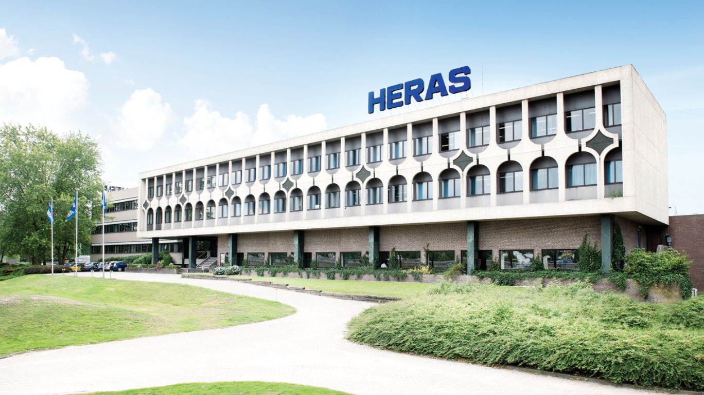

Experience
Education
Software Developer - Koning Willem I College
This is the course that I’m currently following. I’m in my third and final year, preparing for my final exams. The course focusses on making you an all-round software developer, teaching you a diverse set of skills like: HTML / CSS, Javascript, PHP, .NET / C# and SQL. Besides the coding languages we learn to work with widely used software and systems like VMware and DevOps. During the course we also go on internships to learn more about how it is to be in the actual workplace.
Student Council - Koning Willem I College
During my studies I also decided to sign up for the student council. The student council has weekly discussions about new policies, organising activities and improving the students’ life within the school, along with many other subjects. We don’t just sit there and discuss, however, we organise seasonal activities and make sure the new policies actually get added in the school.
After a merge with another school, a lot of the student council got revamped and I became the head of the inlcusivity and sustainability commission. The commission has the task to make sure all students feel welcome and comfortable within the school and make sure the school continues its path to becoming a green and sustainable school. We do this by helping organise activities representing minority groups of people and implementing new green ideas on campus.
In a way, I learned just as much from the student council as I did from my studies in school. Not in terms of building software, but by introducing me to how everything runs within a big organisation and how to get stuff done by taking the right actions.
VMBO-T - Kempenhorst College
This was my middle / high school education. It wasn’t anything special, I learned the basic set of skills any student learns. This was the time, however, where I discovered my interest in building software. I also opted in for the optional Anglia Examinations to become better at the English Language.
Internships
Heras
 During the first half of my second year I interned at Heras. Heras is an international protection company. That means that they come up with and make solutions across many different sectors. They’re widely known for their security solutions which include fences, gates, cameras and other solutions.
I interned as a software developer along with two other interns for six months. During our internship we were tasked with building a full-stack application that would be used by prisons in the Netherlands and the UK.
This internship taught me a lot about how it is to actually work as a software developer. Building the full-stack application also taught me a lot as we’ve never truly done that in school before. I was mostly in charge of doing the back-end, like getting the application to be hosted on linux and setting up the database using MySQL.
Certificates
During my studies I’ve also earned a few certificates. They’re nothing special, but nice little add-ons to have.
Anglia Examinations
Anglia Examinations was a program that my middle / high school offered. It was available for the students who wanted to learn English at a higher level than the normal school program would teach you.
After finishing the exams you get a certificate stating that you’re proficient in B2-level English.
Hackathon Masters
Hackathon Masters is an organisation that hosts hackathons throughout the Netherlands. During my second year at Koning Willem I College I participated in one of the hackathons organised at our school. Together with three other students, we developed an app using Xamarin for ‘Stichting Praktijkleren’, a charity that supplies educational material for kids that need it.
This was the first ever hackathon I ever participated in. It taught me a lot about working in a high stress level environment, as we only had four days to develop the app. We didn’t get first place, sadly, but we did get the second, for being my first hackathon I still consider that pretty good.